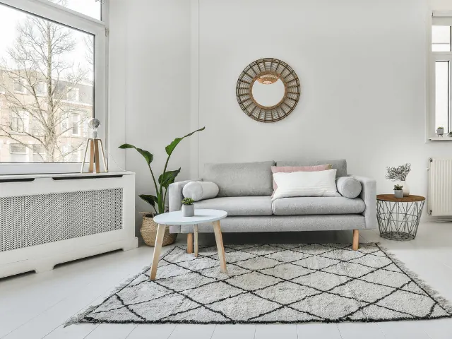
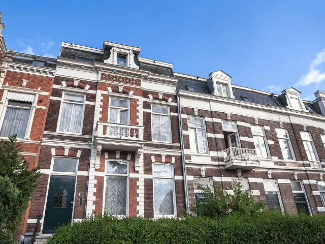

Lang huren in Nijmegen: Tips voor de perfecte plek!
Gepubliceerd op 18 januari 2023, bijgewerkt op 8 november 2023
Onderdeel van de gids Studeren in Nijmegen

Nijmegen is een bruisende stad, en er zijn dan ook veel mensen die graag in deze prachtige plaats zouden willen wonen. Langdurig huren in Nijmegen is echter makkelijker gezegd dan gedaan. Want hoe vind je nu precies een mooie plek om te wonen? De huidige woningmarkt ontmoedigd veel huurders. Daarom schieten wij graag te hulp met enkele tips die ook jou kunnen helpen.
Vandaag de dag kun je het beste online op zoek gaan naar geschikte woonruimte. Schrijf je in bij diverse instanties, om zodoende je kansen te vergroten. Gebruik daarnaast ook je eigen netwerk om jouw zoektocht naar een woning in Nijmegen onder de aandacht te brengen.
Ben jij nieuwsgierig geworden naar welke stappen je het beste kunt zetten wanneer je een huurwoning in Nijmegen zoekt? Dan is het onderstaande artikel speciaal voor jou geschreven. We voorzien je van diverse onmisbare tips, die jij absoluut toe moet passen om zo snel mogelijk een huurwoning in Nijmegen te kunnen vinden.
Tips om woonruimte te vinden in Nijmegen
Ben jij ook van plan om je langdurig te vestigen in Nijmegen, en wens je een kamer of zelfstandige woning te huren? Dan ben je ongetwijfeld benieuwd waar je precies moet beginnen. Een huizenjacht kan immers best overweldigend zijn. Maar er is goed nieuws, langdurig huren in Nijmegen is zeker mogelijk wanneer je de onderstaande tips gebruikt in jouw zoektocht.
1. Het internet is je beste vriend
Of je nu opzoek bent naar een kamer of zelfstandige huurwoning, je zoektocht begint tegenwoordig vaak online. Het internet is immers je beste vriend. Dit geldt ook zeker voor de zoektocht naar een woning in Nijmegen. Uiteraard geldt ook; Hoe actiever je zoekt, hoe meer kans. Het begint dus met een klein stukje motivatie.
Wij raden je aan om je bij zoveel mogelijk kameraanbieders en woningcorporaties in te schrijven. Onderstaand enkele websites waar jij als kamerzoekende terecht kunt.
- Kamernet
- Kamerstunt
- Kamernijmegen
Alhoewel veel studentenhuisvesters werken met inschrijftijd, worden er ook vaak genoeg kamers toegewezen op basis van loting. Dit is waar jij je in de eerste instantie dus het beste op kunt focussen.
Ben jij geen student meer? Of misschien studeer je nog wel maar heb je behoefte aan een zelfstandige woning? Dan kunnen de onderstaande sites wellicht nuttig zijn.
- Funda
- Huurstunt
- 123wonen
Dit zijn slechts enkele voorbeelden waar jij het woningaanbod in Nijmegen kunt bekijken. Wanneer je in zee gaat met een verhuurmakelaar, kan het nuttig zijn om een persoonlijk gesprek aan te vragen. Op deze manier kun je jouw wensen namelijk kenbaar maken bij de makelaar, en zodoende alleen woningen te zien krijgen die voldoen aan jouw eisen.

2. Gebruik je netwerk
“Spread the word!” We kunnen uit eigen ervaring zeggen dat het van onschatbare waarde kan zijn om al je vrienden, familie en collega’s in te lichten over je zoektocht naar een woning in Nijmegen. Je weet immers maar nooit wie er toevallig connecties heeft in de buurt.
Ook raden wij je aan om je sociale media in te zetten. Plaats simpelweg een bericht op je Facebook, Instagram, Twitter, et cetera. Op deze manier laat je al jouw contacten weten dat je graag wil gaan huren in Nijmegen.
Via social media bereik je een groter publiek, en je weet maar nooit wat hieruit voort kan komen. Er zijn al diverse woningzoekende geweest die via deze weg een prachtplek in Nijmegen hebben weten te bemachtigen. Je netwerk is soms groter dan je denkt, en via via kun jij zomaar eens bij een expert terecht komen die jou aan een huis helpt.
Mensen vinden het bovendien fijn om te verhuren aan bekende of kennissen van bekende. Dit geeft toch een bepaalde mate van zekerheid voor beide partijen.

3. Houd nieuwbouwprojecten in de gaten
In iedere gemeente staan er vaak genoeg nieuwbouwplannen op de agenda. In Nijmegen is dit niet anders. Het is dan ook verstandig om eventuele nieuwbouwprojecten in de gaten te houden. Deze vind je meestal terug op de website van de gemeente.
Veel nieuwbouwwoningen worden specifiek gebouwd met het oog op starters, en bevinden zich in een laag tot gemiddeld prijssegment. Het zijn dan ook aantrekkelijke woningen waar veel mensen hun zinnen op hebben gezet. Toch kan niet iedereen die dat wil zomaar een nieuwbouwwoning bemachtigen.
Wanneer je in aanmerking wenst te komen voor een woning uit een nieuwbouwproject, dien jij je hier tijdig voor in te schrijven. En met tijdig bedoelen we soms wel jaren van tevoren. Over dergelijke projecten gaat soms namelijk wel jaren heen. Als je kans wilt maken op een nieuwe huurwoning in Nijmegen moet je er dus snel bij zijn.
Hopelijk kan je aan de hand van onze 5 suggesties een keus maken waar je wilt overnachten in Nijmegen. Zoek je nog inspiratie om een hapje te eten in Nijmegen, kijk dan eens hier. Ben je meer geïnteresseerd om naar een café toe te gaan waar het één en al historie ademt, lees dan vooral dit artikel van ons.